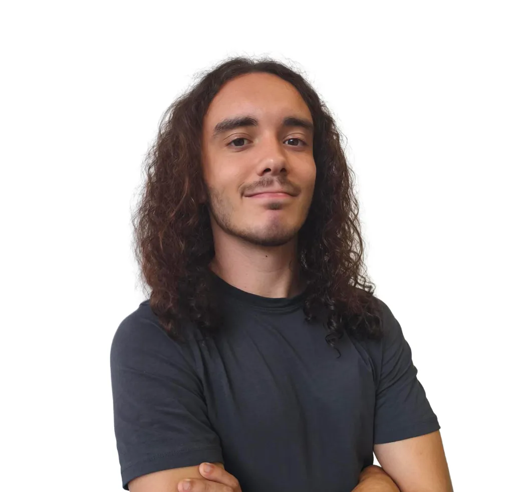

Desarrollador enfocado en Backend Java con formación técnica en DAM y base en administración de sistemas (SMR). Especializado en arquitectura orientada a objetos (POO), testing automatizado con JUnit 5, bases de datos relacionales (SQL / PostgreSQL) y control de versiones con Git / GitFlow.
Aporto experiencia práctica demostrada en consultoría IT, habiendo optimizado +25 horas semanales de gestión manual mediante automatizaciones RPA en producción (Power Automate Desktop / Microsoft 365). Traslado este rigor al desarrollo de software modular y seguro como Habitly (gestión inmobiliaria y legal tech) y SplitIt (motor de facturación y compensación de céntimos para el sector HORECA).
Disponibilidad para incorporación inmediata a jornada completa o prácticas DAM.
Marcador móvil nativo Android desarrollado en tiempo récord mediante ingeniería asistida por IA. Sincronización multijugador offline por Sockets TCP y emparejamiento por QR.
StateFlow.Aplicación de escritorio en Java SE con arquitectura modular por capas, interfaz gráfica Swing (Modo Oscuro), persistencia local y motor de cumplimiento legal.
char[]) siguiendo recomendaciones OWASP.Aplicación CLI modular en Java SE para el procesamiento y prorrateo de facturas gastronómicas, desarrollada a partir de requerimientos reales del sector HORECA.
LectorConsola), formateo de tickets (TicketImpresor) y lógica de cálculo (Ticket).Programación orientada a objetos (Java, Kotlin), diseño de bases de datos relacionales (SQL/PostgreSQL), acceso a datos (JDBC, Hibernate), desarrollo de interfaces (Swing), calidad y testing de software (JUnit 5) y control de versiones (Git/GitFlow).
Administración de sistemas operativos Windows/Linux, infraestructuras de red local (LAN/VLAN, TCP/IP, switches/routers), virtualización, ciberseguridad básica y soporte técnico integral a usuarios.